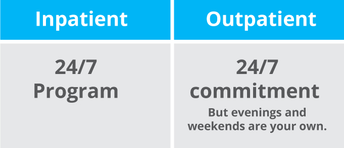

There are many treatments, depending on the severity of the symptoms. A few common ones include:
Medication
Antidepressants are usually used to treat depression, but can also help with anxiety, and other mental disorders with similar symptoms.
Anti-anxiety medications are typically prescribed for anxiety disorders, such as generalized anxiety disorder. These medications help for a short period, but a longer use can cause addiction or dependency.
Mood-stabilizing medications commonly treat people diagnosed with bipolar disorder and other similar mood disorders. These medications help prevent mood swings between mania and depression.
Antipsychotic medications generally treat psychotic disorders like schizophrenia, but can also be used for people with bipolar disorder who show some psychotic symptoms, usually during a manic episode.
Therapy
Usually paired with medication, psychotherapy (AKA talk therapy) has proven to be more effective and useful than medicine, by treating a wide range of mental illnesses. Psychotherapy is when a person talks with a therapist about their issues and problems. A therapist helps them cope with their troubles and learn more about their feelings and conditions. These chats can be done either individually, with a group, or with their family.
Inpatient and outpatient treatment
There are two types of settings for treating mental disorders, inpatient care and outpatient care. Inpatient treatment is generally for people who display severe symptoms with not much progress made. They are referred to a mental hospital, for treatment 24/7. Another option is outpatient treatment, where someone with mild symptoms can visit a treatment hospital or therapist on certain days each week. These are for people whose symptoms aren’t as severe, so they are able function outside of the mental facility.